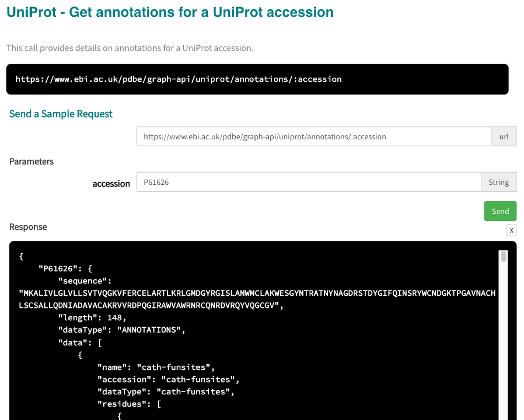
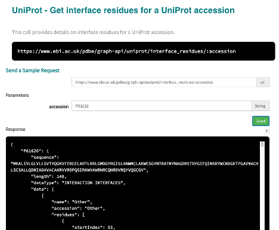

Predicted ligand binding sites in interaction interface¶
If you have a protein of interest and want to know the predicted ligand binding sites of it which are also in a protein-protein interaction, you can first make use of the annotations API for a UniProt accession to get all annotations from PDBe-KB partners for the protein.
The predicted ligand site annotations are provided by p2rank and 3dligandsite. Post process this response to filter the accession field for these providers. This gives all UniProt residues which are annotated as a predicted ligand binding site.

1) Get the annotations data for UniProt accession P61626¶
[40]:
import requests
from pprint import pprint
accession = "P61626"
annotations_url = f"https://www.ebi.ac.uk/pdbe/graph-api/uniprot/annotations/{accession}"
annotations_data = requests.get(annotations_url).json()
2) Filter the data for providers p2rank and 3dligandsite¶
[41]:
all_ligand_binding_residues = list()
for provider_data in annotations_data[accession]["data"]:
if provider_data["accession"] in ["p2rank", "3dligandsite"]:
residues = [x["startIndex"] for x in provider_data["residues"]]
all_ligand_binding_residues.extend(residues)
3) Get interacting residues for the UniProt accession¶
Use the interface residues for a UniProt accession API call to get this data.

[42]:
interface_url = f"https://www.ebi.ac.uk/pdbe/graph-api/uniprot/interface_residues/{accession}"
interface_data = requests.get(interface_url).json()
4) Filter interface_data on common residues¶
[43]:
all_interface_residues = list()
for item in interface_data[accession]["data"]:
interacting_residues = [x["startIndex"] for x in item["residues"] if x["startIndex"] in all_ligand_binding_residues]
all_interface_residues.extend(interacting_residues)
[44]:
print(f"Residues of {accession} which is predicted ligand binding site and part of protein-protein interaction are {all_interface_residues}")
Residues of P61626 which is predicted ligand binding site and part of protein-protein interaction are [53, 64, 67, 71, 76, 78, 82, 122, 126, 128, 40, 42, 45, 96, 115, 53, 62, 96]